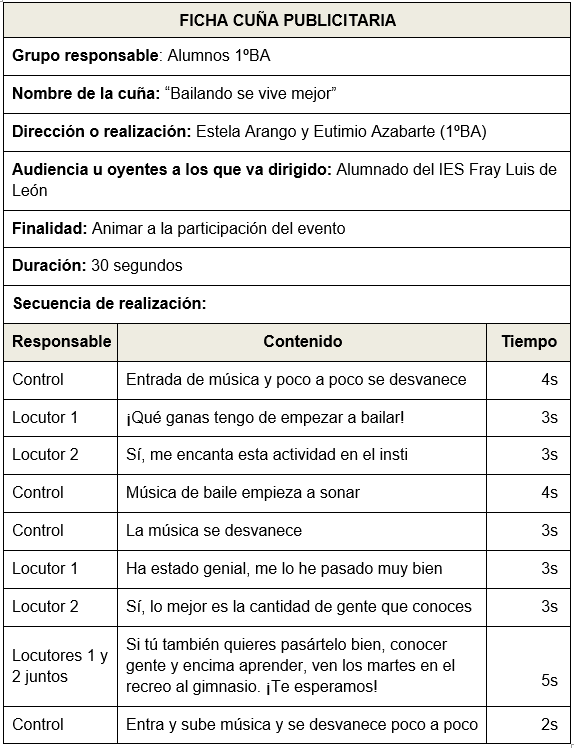

Es un anuncio pregrabado con una duración de 30 segundos. Es un formato muy corto y muy variable. Se pueden promocionar diferentes proyectos, programas, clases, etc. basándose en la repetición. Se usa para sugerir formar parte de lo que anuncie.
Los factores claves
Como cualquier anuncio, el objetivo de la cuña publicitaria es mandar un mensaje y convencer al público.
Los principales factores para realizar un anuncio de radio son:
- Tener una idea. Primero tenemos que resolver estas preguntas: qué, cómo y para quién está dirigido.
- Tener participantes. Es importante destacar la importancia del tono y la acentuación para impactar a quien nos escucha.
- Usar música. Un anuncio perdura si la melodía se recuerda. La música es un factor muy importante para poder recordar lo que se anuncia.
- Usar efectos de sonido. Los efectos de sonido son importantes para crear realidad, nos transportan a la situación recreada.
Realización
- Tenemos que pensar en las personas que lo van a oír ¿qué te gustaría escuchar si tú fueras ellos?
- La forma de contarlo es muy importante. Con una sintonía y con humor la cuña publicitaria se recordará.
- Controlar el tiempo es clave para que el anuncio tenga éxito. Las pausas también son necesarias.
- Hay que usar el diálogo, la dramatización, diferentes tonos de voz para que impacte, incluyendo la música y los efectos de sonido adecuada ajustada al anuncio.
- Sé claro y preciso. Solo tienes 30 segundos.
